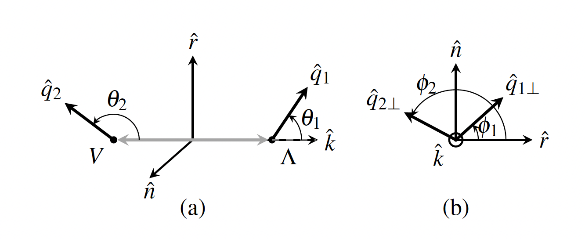

Two entanglement-certification theorems for the incomplete qubit-qutrit density matrix are stated to have been independently proved in the Lean theorem prover.
Abstract
Quantum-information observables have emerged in recent years as new tools in nuclear and particle physics, from entanglement in top-quark pairs to spin correlations in $Λ\barΛ$ production. Extending these studies to unequal-spin hadronic final states poses a fundamental challenge: the $6\times6$ density matrix of a qubit-qutrit system contains 35 independent spin parameters, but the decays of $ΛV$ pairs, with $V=φ$ or $K^{*0}$, provide access to only 23 due to the hidden vector polarization from the strong decay. In this Letter, we formulate a qubit-qutrit quantum tomography (QQQT) technique for these spin-$\tfrac{1}{2}\otimes1$ systems and establish exact criteria for entanglement certification from the incomplete density matrix. Compared with the $Λ\barΛ$ system, QQQT of $Λφ$ and $ΛK^{*0}$ provides a new probe of nonperturbative QCD hadronization, enabling a direct comparison of the spin evolution of entangled quark pairs produced from the vacuum as they hadronize into a baryon or a vector meson.
Problem
A qubit-qutrit (spin-1/2 ⊗ 1) density matrix for ΛV hadron pairs (V = φ or K*0) has 35 independent spin parameters. The decays give access to only 23 of them, because the vector-meson polarization is hidden by its strong decay. Entanglement must therefore be certified from an incomplete density matrix.
Approach
The authors formulate a qubit-qutrit quantum tomography (QQQT) technique based on decay analyzers in the pair rest frame. They derive the master angular distribution in closed form, identify which parameters are accessible, and give an estimator for each accessible parameter. They construct the measurable density matrix ρ_meas and prove exact criteria for certifying entanglement from it. The two theorems are reported as independently proved in the Lean theorem prover.

Figure 1: Coordinate system, defined in the \Lambda V pair rest frame, where the two hadrons are back to back. The orthonormal triad is \hat{k}=\hat{p}_{\,\Lambda} (the \Lambda momentum direction), \hat{n}\propto\hat{p}_{\rm beam}\times\hat{k} normal to the production plane, and \hat{r}=\hat{n}\times\hat{k} , with \hat{k}\times\hat{r}=\hat{n} . The daughter directions \hat{q}_{1} (proton from \Lam
Results
Exactly 23 of the 35 parameters are accessible; the V dipole and the dipole correlations (P_i, C_ij) are not. The authors give exact entanglement criteria that no other analysis of the same data can strengthen. They propose ΛV systems as a probe of QCD hadronization, complementing ΛΛ̄ studies.
Sector
Accessible?
a_i (Λ polarization, 3)
yes, standard
ρ00, R10, R1m (V alignment, 3)
yes, standard
K_{i,α} (dipole ⊗ V-quad., 9)
yes, joint fit
I10, I1m, L_{i,α} (V align. + corr., 8)
yes, 2D fit only
P_i, C_ij (V dipole ± corr., 12)
no
Experimental accessibility of density-matrix sectors